Префектура Миэ · Камэяма · история и искусство
Сэки-дзюку и Камэяма: почтовая станция Токайдо, сладости ниндзя и искусство у вокзала
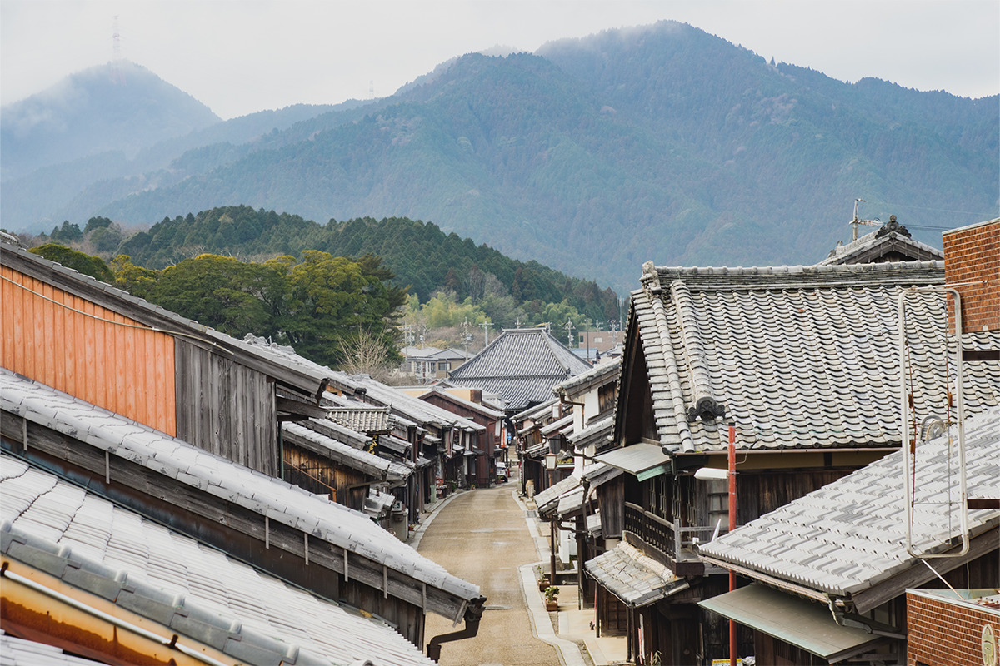
Камэяма веками жила дорогами: здесь сходились пути с востока, запада и юга. В старой почтовой станции Сэки-дзюку до сих пор стоят дома эпохи Эдо, а у вокзала город встречает гостей библиотекой и скульптурой.
Дорога
Город на перекрёстке путей
Камэяма лежит в центре и на севере префектуры Миэ, и с древности это был важный узел дорог. Сегодня через город проходят скоростные трассы на восток, запад и юг, а вместе с ними встречаются культуры двух больших регионов: Токай вокруг Нагои и Кансай вокруг Осаки и Киото.
В эпоху Эдо (1603–1868) Камэяма была замковым городом княжества Исэ-Камэяма, и на её землях стояли сразу три почтовые станции дороги Токайдо, которая связывала Эдо и Киото: Камэяма-дзюку, Сэки-дзюку и Сакасита-дзюку. Лучше всех сохранилась Сэки-дзюку. Здесь почти на 1,8 км вытянулись купеческие дома мати-я, построенные с эпохи Эдо до середины эпохи Мэйдзи (1868–1912). Самым старым из них больше двухсот лет: их возвели в середине XVIII века.
Сэки-дзюку
Улица, которая продолжает жить
Сэки-дзюку была 47-й станцией Токайдо. Через неё шли княжеские процессии, которые по закону регулярно ездили в столицу и обратно, и паломники, направлявшиеся в святилище Исэ. Старая улица на всём протяжении сохранила облик тех лет, и государство включило её в число охраняемых районов традиционной застройки.
При этом Сэки-дзюку не музей под открытым небом. В старых домах по-прежнему живут, работают лавки с самым нужным для быта. Рядом с ними переселенцы из других мест открывают в мати-я кафе и гостевые дома. Улицу не стали переделывать сверх меры, и поэтому здесь так тихо и спокойно.
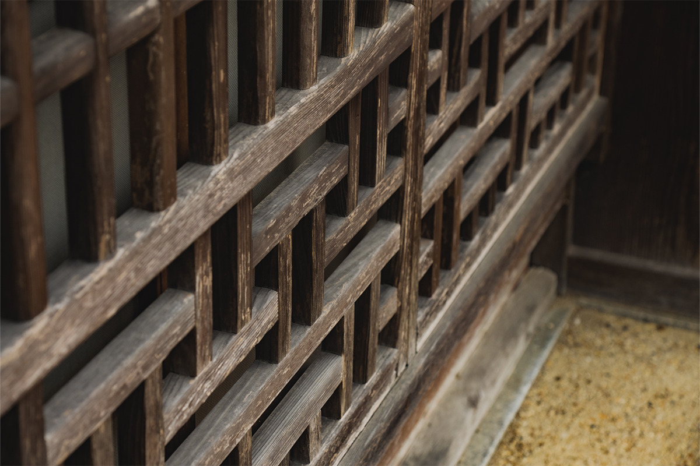
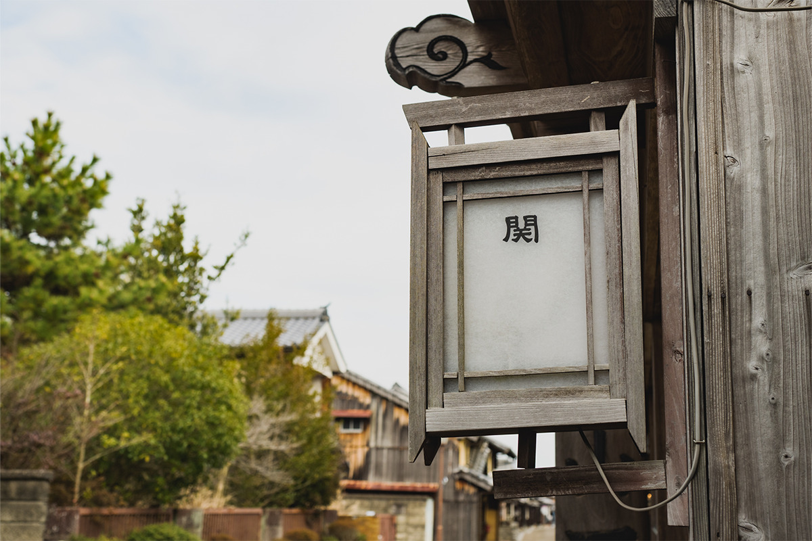
Дома строили так, чтобы порадовать взгляд многочисленных путников, и в отделке фасадов много выдумки. Даже просто разглядывать вывески, неспешно идя по улице, уже интересно. В середине улицы есть смотровая площадка «Хякурокури-тэй Тёкан-тэй»: с неё хорошо видны черепичные крыши и горы за ними.
Сэки-дзюку на Токайдо
- Адрес
- префектура Миэ, Камэяма, Сэки-тё
Сладости
«Фукавая»: рецепт эпохи Эдо и тайна ниндзя
Среди старых домов Сэки-дзюку работает лавка сладостей «Фукавая». Её история началась при третьем сёгуне Иэмицу Токугаве (1604–1651), который правил страной в 1623–1651 годах, и сегодня дело ведёт уже четырнадцатое поколение семьи.
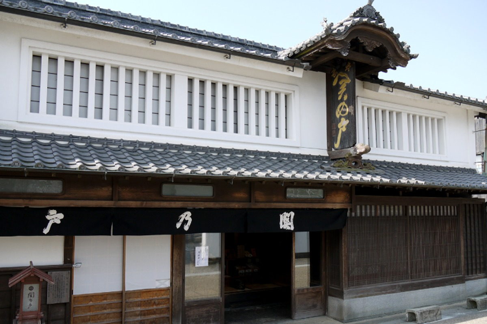
Главная сладость лавки называется «Сэки-но то». Её делают по тем же пропорциям и тем же способом, что и в 1620–1640-х годах. Придумал эти моти, по семейному преданию, потомок ниндзя. В 2019 году в старых документах лавки нашли записи о тайной службе, и сегодня «Фукавая» рассказывает о себе как о кондитерской, которая когда-то служила прикрытием для лазутчиков, и бережёт эту часть японской культуры.
«Фукавая»
- Сайт
- sekinoto.com
Кафе
SAKURASABO: поп-арт во дворе старого дома
3 марта 2021 года глава «Фукавая» открыл на той же улице кафе SAKURASABO в стиле старого амбара. Задумка простая и смелая: соединить Эдо с поп-артом, чтобы Сэки-дзюку, где бережно хранят традиции, заинтересовала и молодёжь.
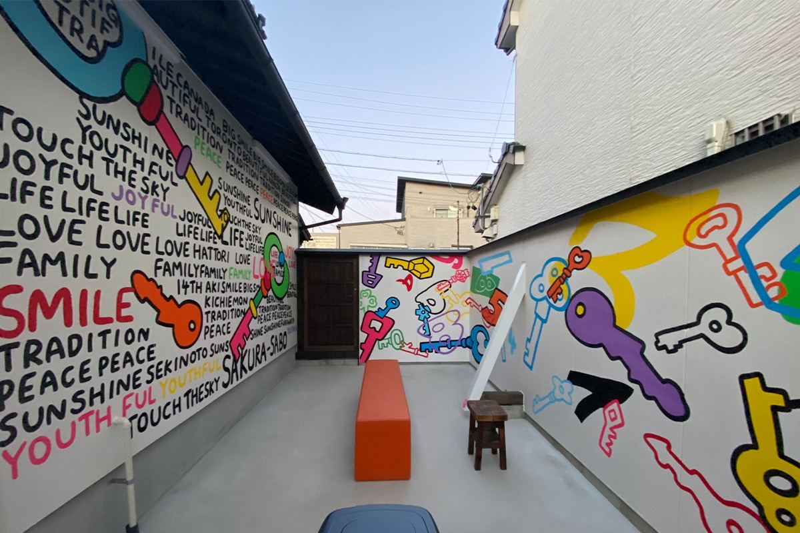
Роспись сделал художник SHETA, известный совместными коллекциями с FILA, COACH и «Звёздными войнами». На внутренней стороне ограды, которая окружает дворик с террасой, он нарисовал яркие ключи и цифры. Рисунки есть и в самом кафе.
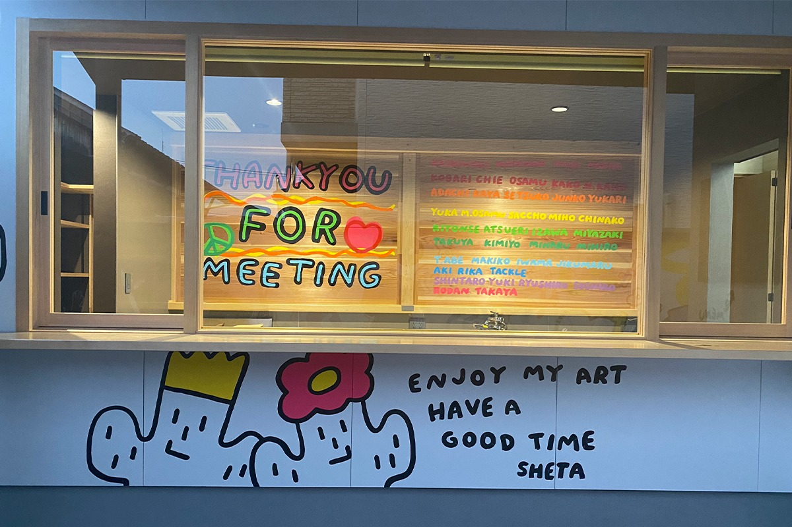
В кафе продают официальные товары SHETA, их можно купить и в интернет-магазине. На них изображена самая известная работа художника «Кактус LOVE&PEACE», милый рисунок, который нравится и детям, и взрослым.
Кроме того, здесь продавали сумки-тоут, кружки, прозрачные футляры и картины.
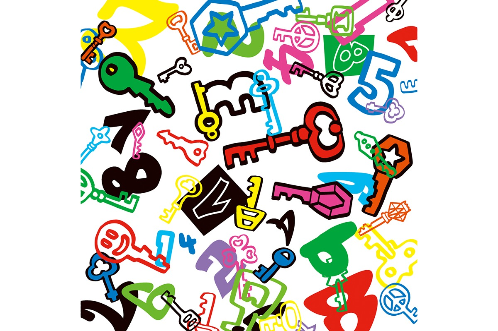
SAKURASABO
- Адрес
- префектура Миэ, Камэяма, Сэки-тё Синдзё, 1765-5
- Телефон
- +81 595-86-5780
- Часы работы
- 10:00–16:00
- Выходные
- четверг
Обед
«Айдзуя»: рис из старой печи
Когда-то «Айдзуя» был одним из трёх крупнейших постоялых дворов Сэки-дзюку. Его дом сохранили, и примерно с 1998 года здесь работает ресторан. Главное блюдо: окова с горными травами, приготовленная в старой печи. Её делают из риса косихикари из Миэ и клейкого риса с Хоккайдо и готовят на пару в бамбуковой корзине сэйро, поэтому рис получается влажным и упругим.
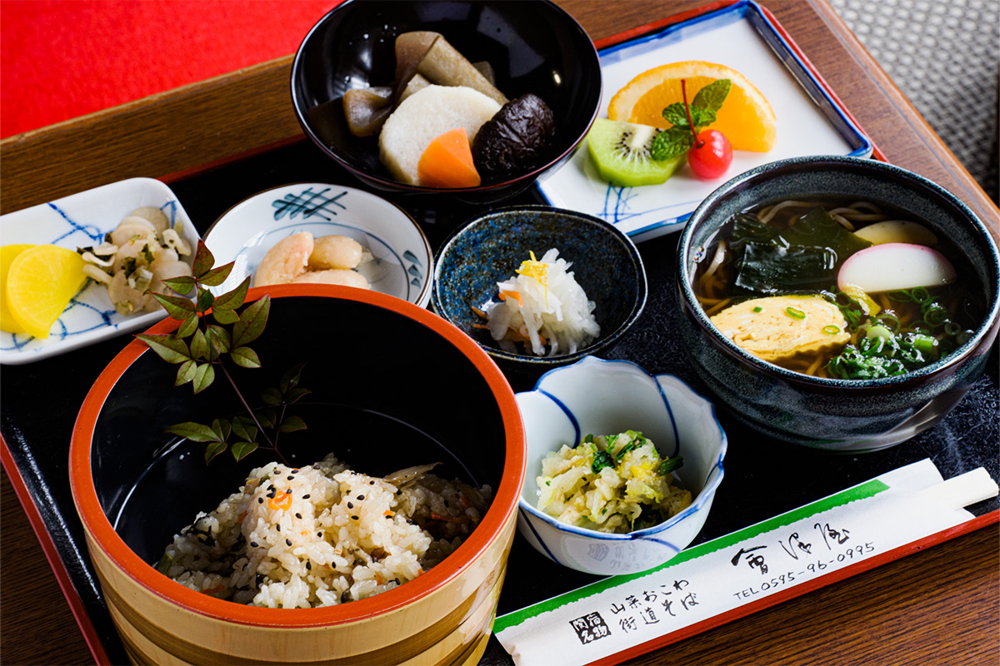
В зале, где всё дышит историей, висят пейзажи Сэки-дзюку кисти художника и стоят работы мастера художественного стекла.
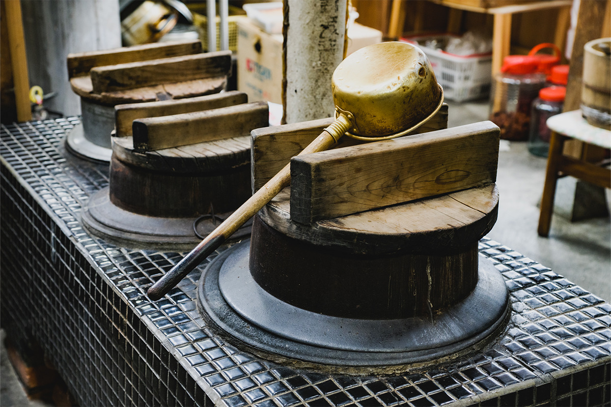
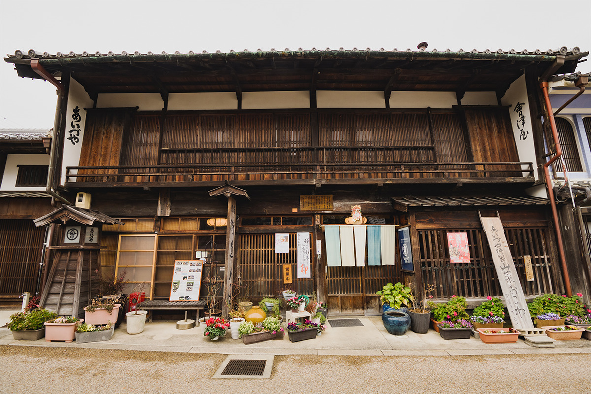
«Айдзуя»
- Адрес
- префектура Миэ, Камэяма, Сэки-тё Синдзё, 1771-1
- Телефон
- +81 595-96-0995
- Часы работы
- 11:00–17:00
- Выходные
- понедельник и вторник (если понедельник праздничный, открыто)
- Сайт
- aizuya72.com
У вокзала
Новая библиотека и бронзовые герои мифа
У вокзала JR Камэяма когда-то стояла почтовая станция Камэяма-дзюку. В январе 2023 года на обновлённой привокзальной площади открылась городская библиотека, задуманная как центр учёбы и городской жизни.
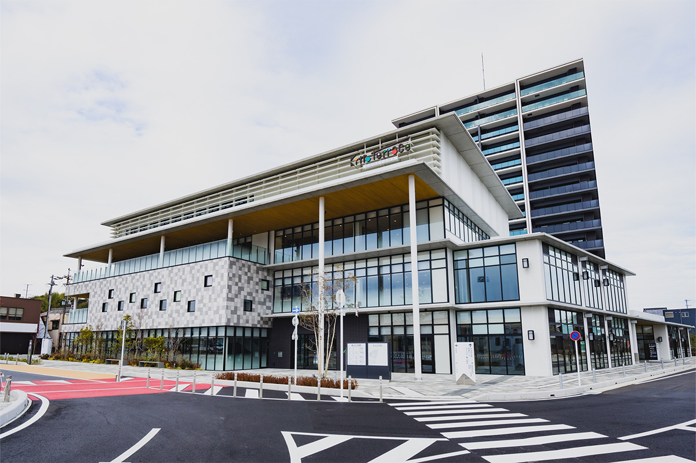
Первый этаж отдан встречам с книгами и общению горожан. Второй этаж для детей и родителей, а стеллажи вдоль стен оформлены как поезд «Книжный поезд KAMEYAMA». Для круглого детского зала живущий в Камэяме автор книжек-картинок нарисовал занавес, сплошь покрытый пейзажами, словно едешь на поезде вокруг света. Если задёрнуть его по кругу, у детей появляется своё особое пространство. На третьем и четвёртом этажах стоят основные фонды.
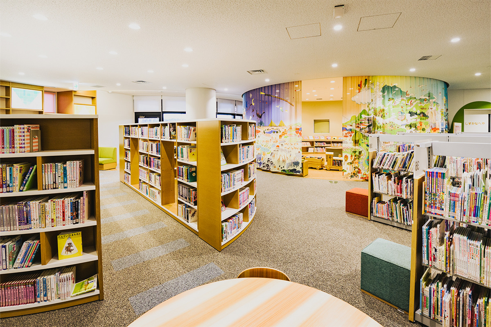
С террасы библиотеки видны новая площадь и холмы на юге города с хребтом Нунобики. Здесь удобно передохнуть с дороги и почитать о городе, прежде чем отправиться гулять.
Тогда же, в январе 2023 года, на площади поставили бронзовую скульптуру Ямато Такэру и его супруги Ототатибана-химэ. Ямато Такэру это легендарный принц и герой японских мифов, и в Камэяме сохранились связанные с ним предания. Автор скульптуры Синъя Накамура, уроженец Камэямы, кавалер ордена Культуры и почётный гражданин города.
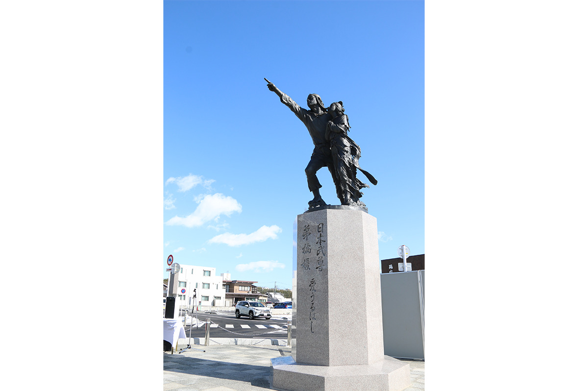
Городская библиотека Камэямы
- Адрес
- префектура Миэ, Камэяма, у вокзала JR Камэяма
Сладости
«Дзуйхокэн»: черепаха и дракон
Рядом с вокзалом работает кондитерская «Дзуйхокэн». Её фирменная сладость «Камэ-но о» («хвост черепахи») делается с самого основания лавки в конце эпохи Эдо: мягкое гюхи из рисовой муки с начинкой из гладкой бобовой пасты.
Чтобы сохранить старый вкус, хозяева решили браться и за новое. Когда площадь у вокзала перестраивали, здесь придумали баумкухен «Рю-но хигэ» («усы дракона») из рисовой муки сорта «Мусуби-но ками», который подносят святилищу Исэ. Заодно обновили упаковку и оформление лавки: на оштукатуренной стене мастер-штукатур изобразил черепаху и дракона.
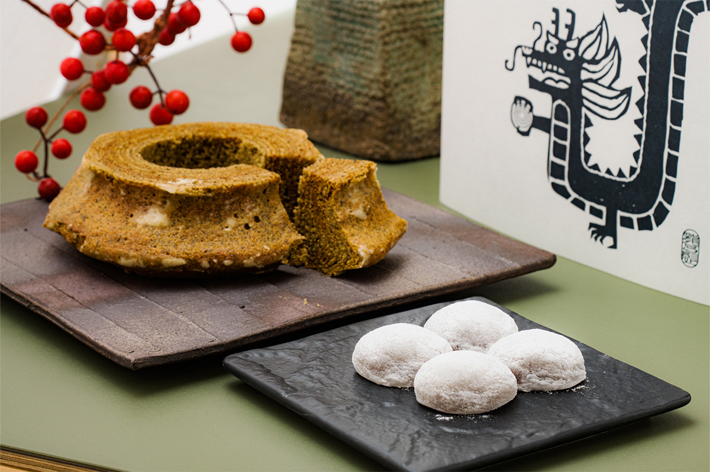
В лавке есть кафе, где подают и обеды.
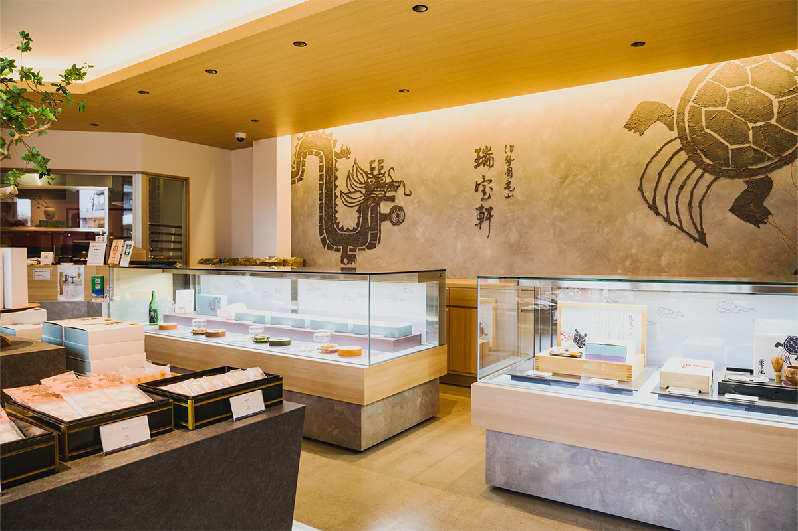
«Дзуйхокэн»
- Адрес
- префектура Миэ, Камэяма, Миюки-тё, 231-54
- Телефон
- +81 595-82-3331
- Часы работы
- 9:30–18:30
- Выходные
- четверг
- Сайт
- zuihouken.co.jp
Фото: Кэйитиро Нацумэ.